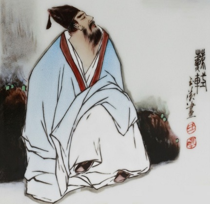
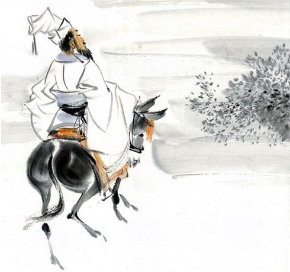

SICHUAN
Born in 1037; passed the imperial examination in 1057; served as a judge
in Fengxiang Prefecture; mourned the death of his father in 1061; had a
long family tradition of learning.
Unfulfilled ambitions; youthful ideals; life reflections
Poetry style: Fresh and handsome, high-spirited; idealistic, natural
language
《刑赏忠厚之至论》
立法贵严，
而责人贵宽。
On the Ultimate Principle of Justice through Leniency in Punishment
and Generosity in Reward
In establishing laws, strictness is valued;
in holding people
accountable, leniency is esteemed.

With the concept of being loyal and honest in government as the core, it
expresses his idea ls and ambitions at the beginning of his official
career. When he wrote this article, he was full of vigor and determi
nation to make achievements, reflecting a strong sense of nat ional
responsibility. The article is written in an elegant language and with
rigoro us logic. It inherits the tradition of Confucian political ess
ays and contains profound literary talent and style. In terms of theme,
it emphasizes "benevolent government", "lo yalty" and "the way of
governing", and in terms of emotion, i t is full of rationality and
faith, showing the uprightness an d rationality in Su Shi's early
personality.
《和子由渑池怀旧》
人生到处知何似？应似飞鸿踏雪泥。
泥上偶然留指爪，鸿飞那复计东西。
老僧已死成新塔，坏壁无由见旧题。
往日崎岖还记否？路长人困蹇驴嘶。
Reminiscing in Mianchi with My Brother Ziyou
What is life like wherever we go? Like a wild goose stepping on
snow.
In the mud, claws leave fleeting tracks— Once flown, who cares to turn
back?
The old monk’s tomb stands new and high, The ruined wall hides past
marks, nigh.
Do you still recall the rugged ways? A tired mule brays through
lengthening days.

During the period of "studying and entering official career
(1037–1067)", Su Shi created " Reminiscence of Mianchi with Ziyou".
After meeting his brother Su Zhe again after many years, Su Shi
expressed his deep feelings for the old friendship and the impermanence
of life. His creative mood is as follows: he is grateful for family
affection, and he uses memories of the past to express his sorrow and
the impermanence of life. . In terms of art, the emotions are deep, the
scenes are deep, and the "dream" and nostalgic emotions are used to
enhance the lyrical appeal. The theme revolves around "nostalgia,
emotions, and the impermanence of life", and the overall emotional
tendency is nostalgia and sentimentality.